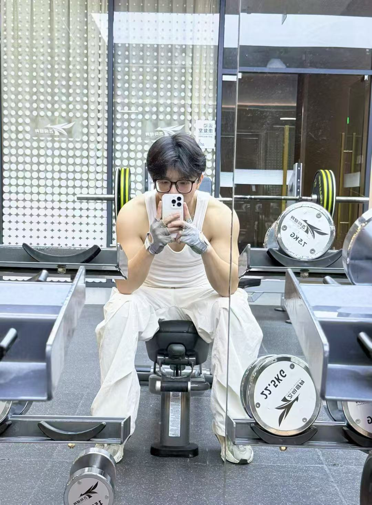
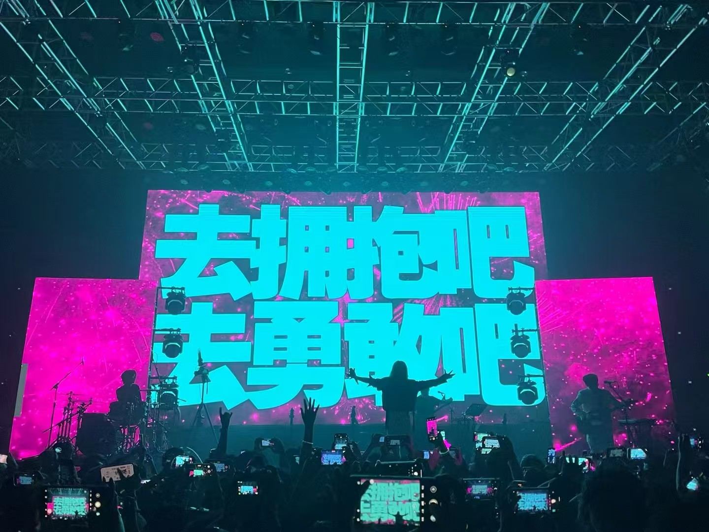
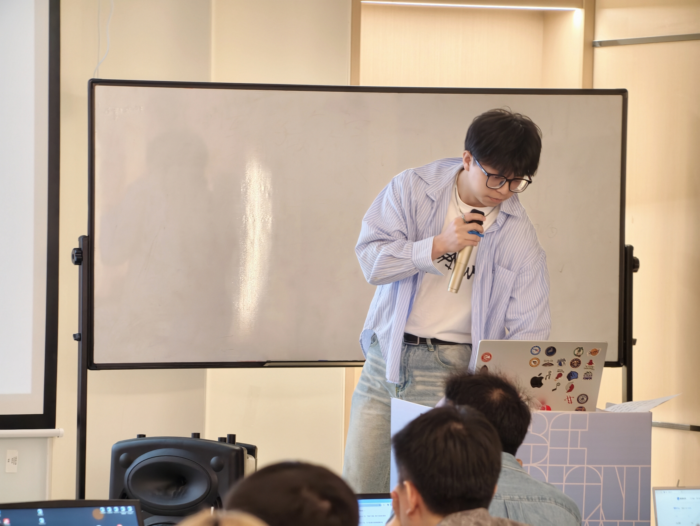

自律 · Fitness
自律
汗水是身体最诚实的奖赏。在每一次推举中对抗平庸，感受自律带来的纯粹掌控感。
正在进化的 AI 探索者。从 0 到 1，我正在学习如何利用 LLM (Large Language Models, 大语言模型) 与代码连接创意与现实。
以身体、自然与声音为轴，寻找秩序与温度

汗水是身体最诚实的奖赏。在每一次推举中对抗平庸，感受自律带来的纯粹掌控感。
步履不停，在群山间找回内心。切断信号，与自然深度对话，在每一步中重新发现自我。

每一个音符的震动，都是对热烈生命最直白的表白。在人群的共振中，找回久违的纯粹。
用 Prompt (提示词) 捕捉灵感的瞬间。在 Algorithms (算法) 与艺术的交界处，见证奇迹。



“从 0 到 1 的跨越，不仅是代码的堆砌，更是对未知的勇敢致敬。作为一名 AI-Native (人工智能原生) 的创造者，我正在学习如何用技术赋予创意灵魂。我眼中的未来，不是冰冷的 Algorithms (算法)，而是人机共生下的美学实验。在这条探索人机边界的路上，我将保持好奇，持续 Build (构建)，让每一行代码都带有生命的温度。”